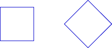

Join us for conversations that inspire, recognize, and encourage innovation and best practices in the education profession.
Available on Apple Podcasts, Spotify, Google Podcasts, and more.
The National Council of Teachers of Mathematics (NCTM, 2000) identifies geometry as a strand in its Principles and Standards for School Mathematics. In grades pre-K through 12, instructional programs should enable all students to do the following:
In grades 3-5 classrooms, students are expected to do the following:
Dutch educators Pierre van Hiele and Dina van Hiele-Geldof developed a theory of five levels of geometric thought. It is just a theory, but a useful one for thinking about activities that are appropriate for your students and prepare them to move to the next level, and for designing activities for students who may be at different levels.
Level 0: Visualization. The objects of thought at level 0 are shapes and what they look like. Students have an overall impression of the visual characteristics of a shape, but are not explicit in their thinking. The appearance of the shape is what’s important. Students may think that a rotated square is a “diamond” and not a “square” because it looks different from their visual image of square. (Early elementary school and, for some, late elementary school)

Level 1: Analysis. The objects of thought here are “classes” of shapes rather than individual shapes. Students are able to think about, for example, what makes a rectangle a rectangle. What are the defining characteristics? They can separate that from irrelevant information like the size and the orientation. They begin to understand that if a shape belongs to a class like “square,” it has all the properties of that class (perpendicular diagonals, congruent sides, right angles, lines of symmetry, etc.). (Late elementary school and, for some, middle school)
Level 2: Informal Deduction. The objects of thought here are the properties of shapes. Students begin “if-then” thinking; for example, “If it’s a rectangle, then it has all right angles.” Students can begin to think about the minimum information necessary to define figures; for example, a quadrilateral with four congruent sides and one right angle must be a square. Observations go beyond the properties into mathematical arguments about the properties. Students can engage in an intuitive level of “proof.” (Middle school and, for some, high school)
Level 3: Deduction. The objects of thought here are the relationships among properties of geometric objects. Students can explore relationships, produce conjectures, and start to decide if the conjectures are true. The structure of axioms, definitions, theorems, etc., begins to develop. The students are able to work with abstract statements and draw conclusions based more on logic than intuition. (This is the goal of most 10th-grade geometry courses, but many students are not developmentally ready for it.)
Level 4: Rigor. The objects of thought are deductive axiomatic systems for geometry. For example, students may compare and contrast different axiomatic systems in geometry that produce our familiar Euclidean plane geometry, finite geometries, the geometry on the surface of a sphere, etc. Note 4
For more information on the van Hiele levels and how to work with students within each level, read the article “Geometric Thinking and Geometric Concepts” by John A. Van de Walle from Elementary and Middle School Mathematics.
Van de Walle, John A. (2001). Geometric Thinking and Geometric Concepts. In Elementary and Middle School Mathematics: Teaching Developmentally, 4th ed. (pp. 342-349). Boston: Allyn and Bacon.
Reproduced with permission from the publisher. Copyright © 2001 by Pearson Education. All rights reserved.
In this course, we have primarily worked across levels 2-4. You may feel that the activities we’ve done are not appropriate for the level of your students, and you’re probably right. The goal for this session is for you to think about problems and activities that are at your students’ level, and how to help them prepare for the next level of thinking.
In grades 3-5, students should be moving from working easily at level 0 through level 1. By fifth grade, they should be starting to work at level 2, thinking in more sophisticated ways.
Video SegmentWatch this clip from Ms. Kurchian’s class, and think about how both the lesson and the teacher are encouraging students to move to that next level of geometric reasoning. Note 5 You can find this segment on the session video approximately 14 minutes and 3 seconds after the Annenberg Media logo. |
Where in the video do you see evidence of the following?
In Session 9, you worked on the problem of building the five Platonic solids and then arguing from the construction that only five such solids were possible. Recall your own experience in this activity as an adult mathematics learner. During the activity, when did you have to use level 2 thinking? (How did you know when to stop building with triangles and move on to other figures? How did you convince yourself that no other Platonic solids were possible?)
Now think about students in grades 3-5 and how the Platonic solids activity might work with them. What must students know and be comfortable with to get the most out of this activity? What are potential stumbling blocks for them?
What might students misunderstand or find confusing in the lesson? How could you alter the lesson or prepare them beforehand to help avoid these misunderstandings?
Note 4
If you are working with a group of colleagues, take some time to discuss your own students. Where in the van Hiele levels do you see them functioning comfortably? (There will be a range, of course, because not all students are the same.) Try to cite evidence from your classrooms: With which tasks do students find success? With which tasks do they struggle?
Note 5
Again, remember that the focus of the video case study is not to examine teaching practice, but to focus on the students and their thought processes.
Answers will vary. Some possible responses:
Answers will vary. The thinking often goes like this: “If it’s going to make a solid shape, there must be at least three polygons meeting at a vertex. If it’s going to make a solid shape, then there must be less than a total of 360° around a vertex. Regular hexagons and polygons with more than six sides all have 120° or more at each vertex, so these shapes cannot be used.” And so on.
Answers will vary. Some possible answers:
Answers will vary. Students will probably gain understanding of three-dimensional figures and how they’re different from polygons. They will likely gain valuable understanding and visualization skills from building and manipulating the solids, and from attempting to count faces, edges, and vertices. They may not have the prerequisite knowledge of angle measures in polygons as a solid foundation. Some students may also struggle with the generalizations. If six triangles don’t work, how do we know seven triangles won’t work? Why can we eliminate polygons with seven, eight, and more sides without even trying to build them?
Answers will vary. Some ideas: Lots of experience with building generalizations in cases that are easier to check, and lots of experience with polygons will help.
For example, students may experience some difficulty in thinking about the role of angles and their connection to building Platonic solids. To prepare them beforehand, you may want to work on the sum of the angles in a triangle and extend it onto making generalizations about other polygons through dividing them into triangles as you’ve seen in Session 3 of this course.